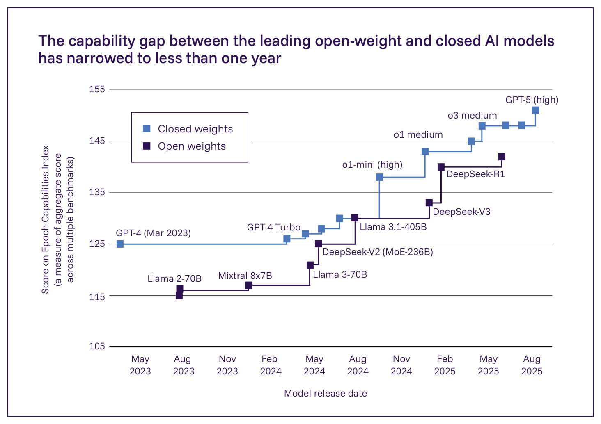

日本語訳
| アクセスの水準 | 意味するもの | 例 |
|---|---|---|
| 完全にクローズド | 利用者はモデルとまったく直接相互作用できない | Flamingo（Google） |
| ホスト型アクセス | 利用者は、モバイルチャットボットアプリケーションのような特定のアプリケーションまたはインターフェースを通じてのみ相互作用できる | Midjourney v7（Midjourney） |
| モデルへのAPIアクセス | 利用者はコードを通じてモデルにリクエストを送信でき、外部アプリケーションでの使用が可能になる | Claude 4（Anthropic） |
| オープンウェイト：重みがダウンロード可能 | 利用者は自分のコンピューターでモデルをダウンロードし実行できる | Llama 4（Meta）、DeepSeek R1（DeepSeek） |
| 利用制限付きでダウンロード可能な重み・データ・コード | 利用者はモデルおよび推論・訓練コードをダウンロードし実行できるが、その利用には一定のライセンス上の制限がある | BLOOM（BigScience） |

Figure 3.10: 時間経過に伴う、最高性能のオープンウェイト（濃い青）モデルとクローズド（薄い青）モデルのEpoch Capabilities Index（ECI）スコア。ECIは、39のベンチマークからのスコアを単一の総合的な能力尺度に統合する。最高のオープンウェイトモデルは、クローズドモデルよりおよそ1年遅れている。出典: Epoch AI, 2025 (1343)。